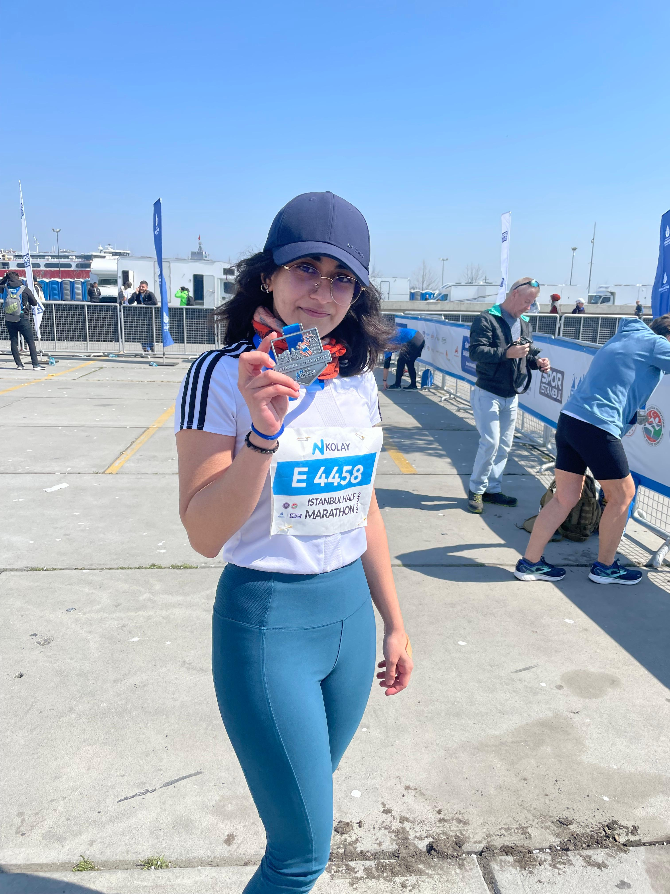
İstanbul Yarı Maratonu — 27 March 2022
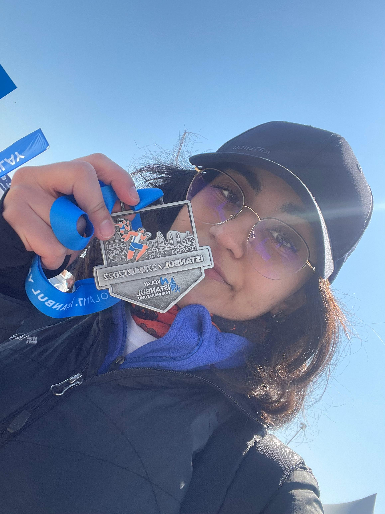
21 km finished in 02:32:01
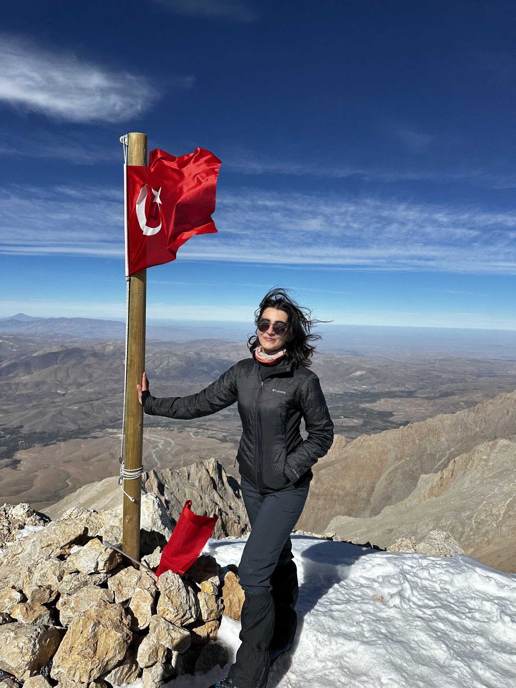
Emler summit — 29 September 2023
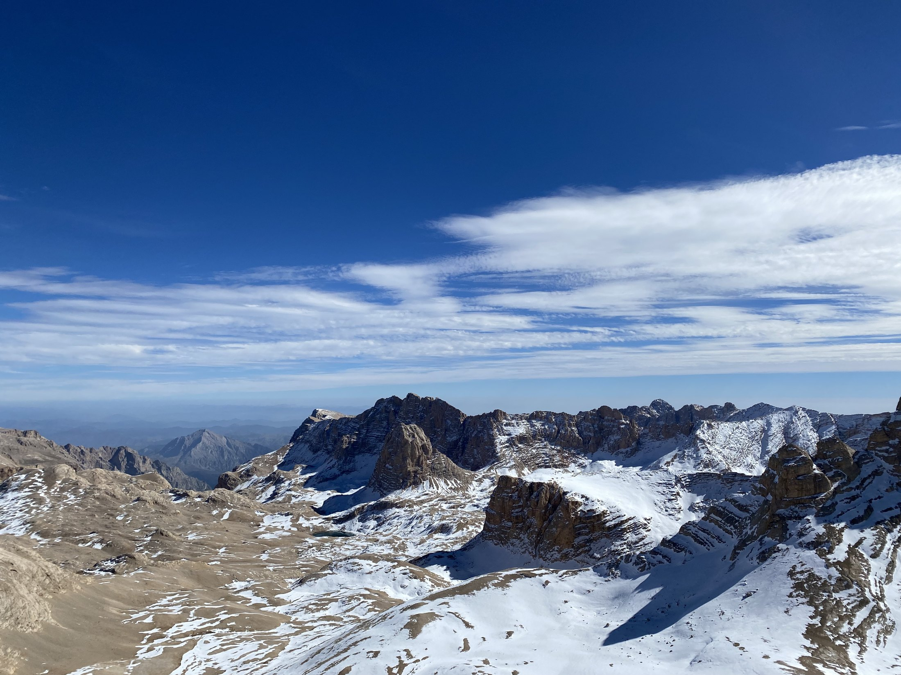
View from Emler — 29 September 2023
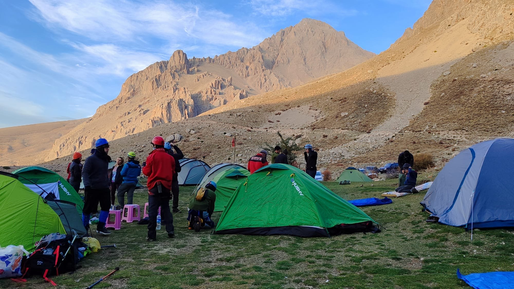
Emler camp — September 2023
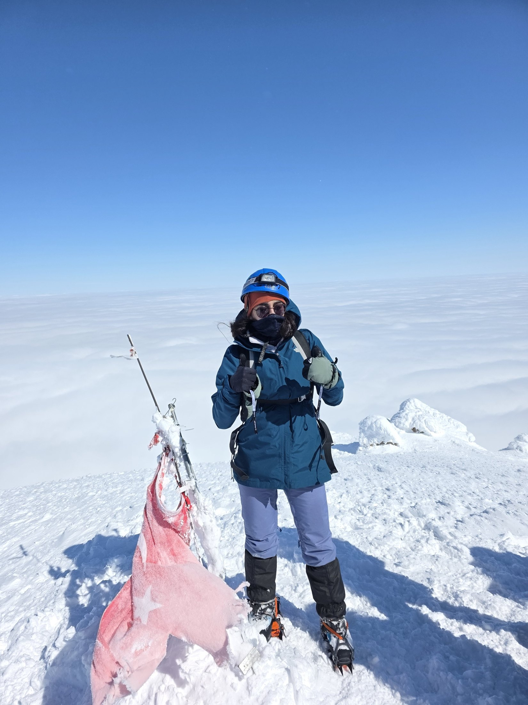
Hasan Dağı summit — February 2026
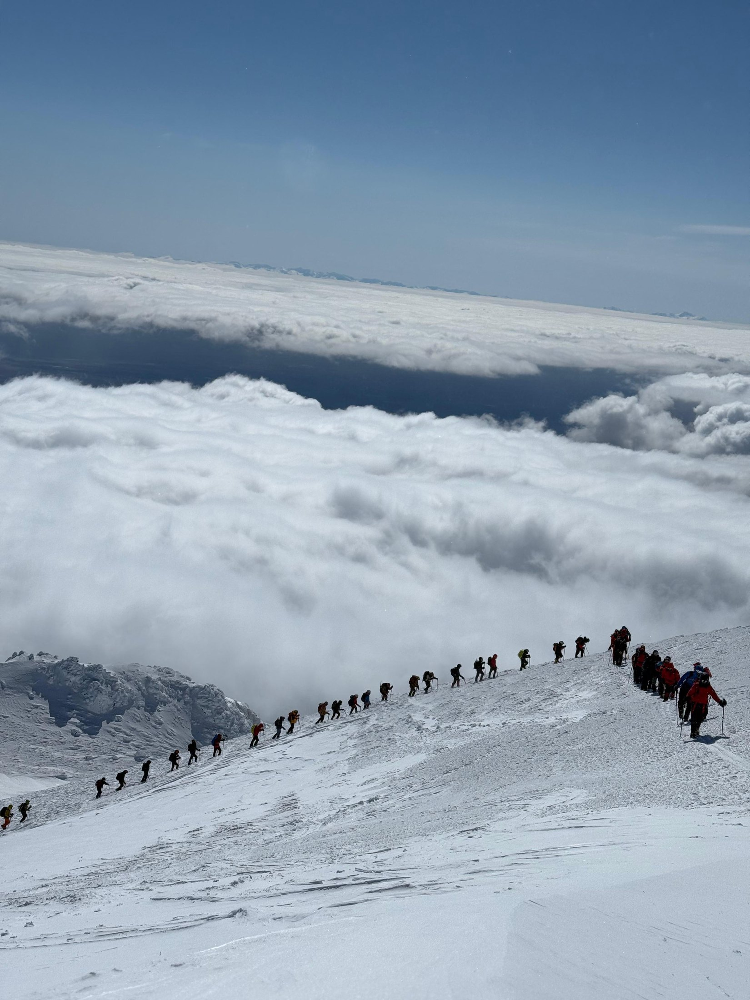
Hasan Dağı winter ascent
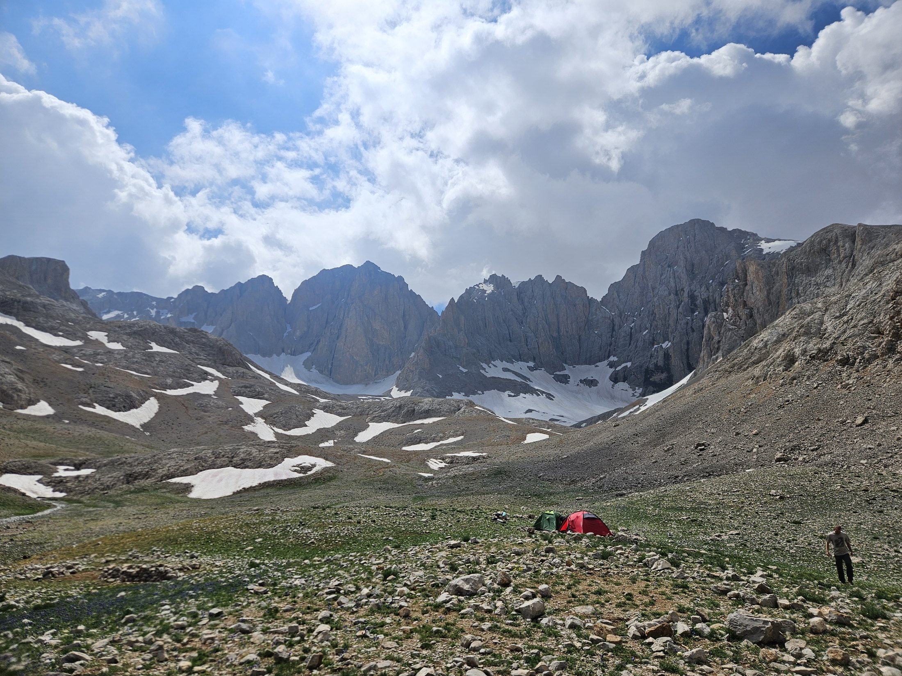
Oba Yeri camp — July 2026
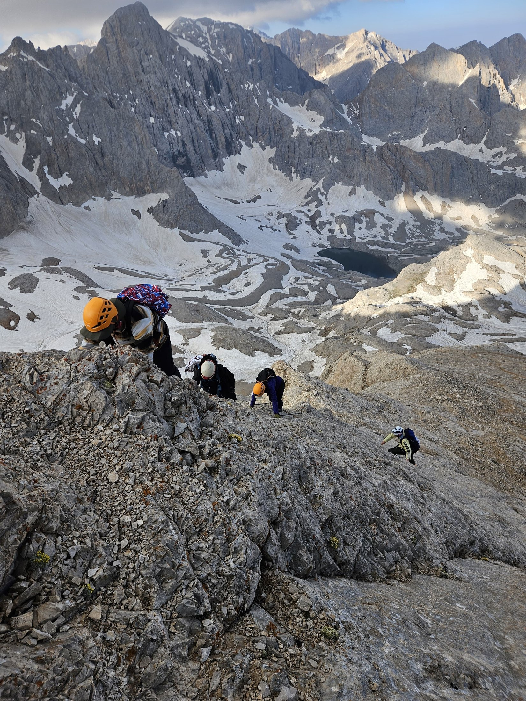
Yıldız ridge climb — July 2026
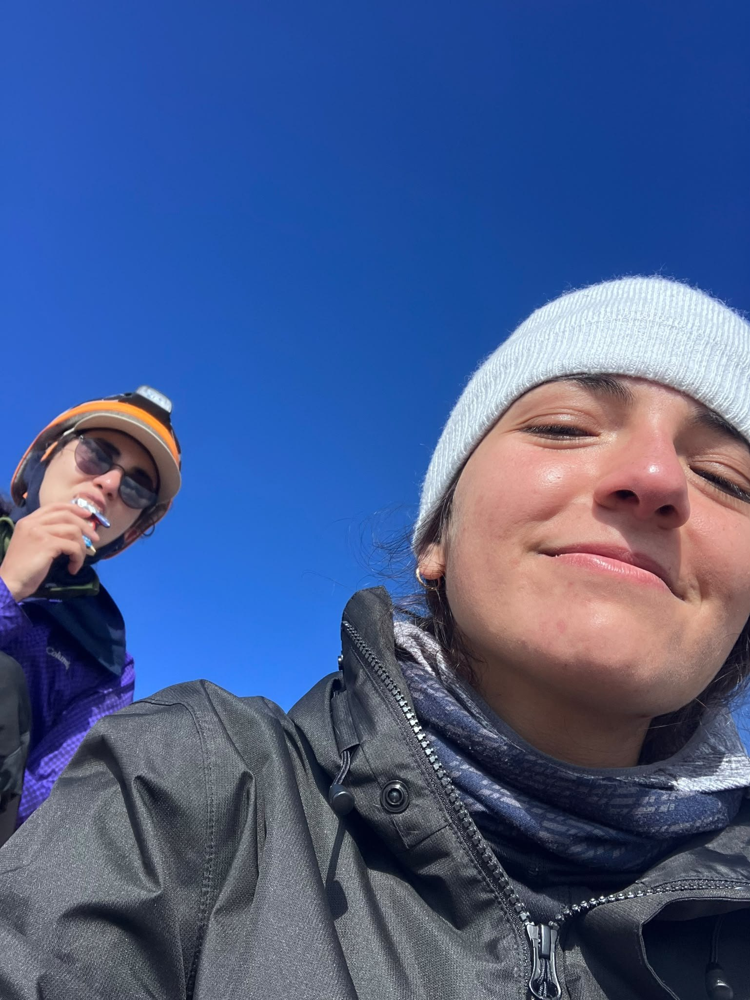
Yıldız summits — Efsane & Beril
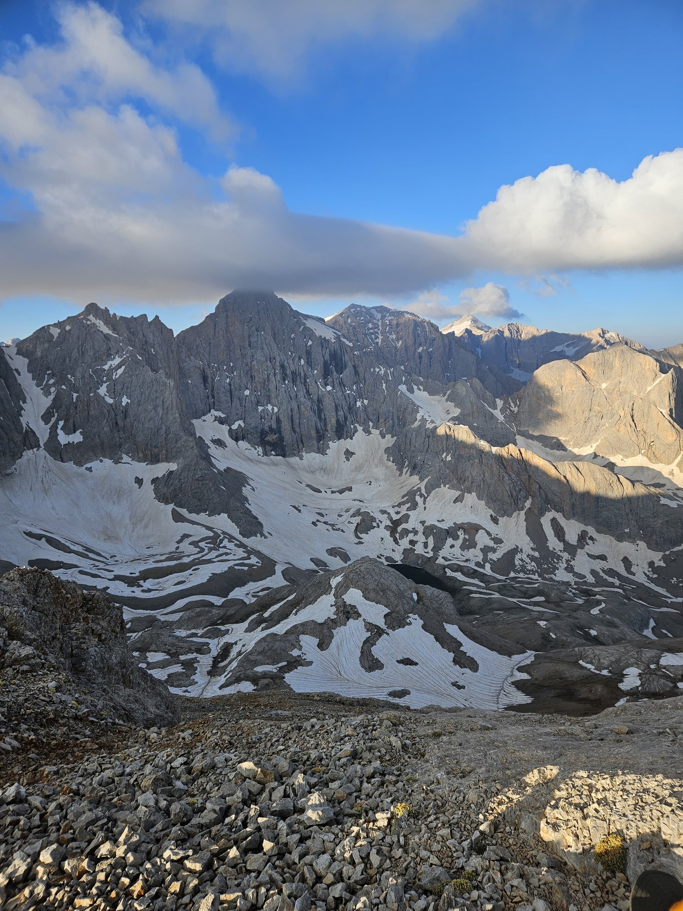
Dipsiz Göl — July 2026